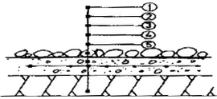
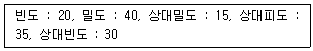
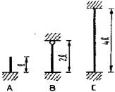
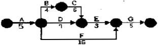
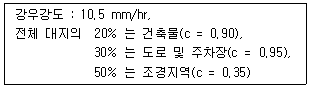

조경기사 (2007-03-04 기출문제)
1과목: 조경사
1. 도시 조절기능으로서 그린벨트(녹지대) 개념이 생겨난 것은?
- 옴스테드의 센트럴파크 계획
- 랑팡의 워싱턴 계획
- 하워드의 전원도시론
- 보스톤 공원계통
(정답률: 76%)

2. 궁남지에 대한 설명으로 틀린 것은?
- 연못 속에 무산십이봉을 본뜬 산을 만들어 꽃을 심고 새를 길렀으며, 호수에서 배를 띄어 놀기도 하였다.
- 무왕 35년 사비궁 남쪽에 판 연못으로 20여리 밖에서 물을 끌어들였다고 삼국사기와 동사강목에 기록되어 있다.
- 못 가운데는 방장 선산을 상징하는 섬을 만들고 물가에 능수버들을 심었다.
- 궁남지의 섬은 중국 한나라 태액지 속에 삼신산을 만들어 불로장생을 기원하던 신선사상에서 영향을 받았다.
(정답률: 39%)
3. 튜더 왕조의 영국정원에 관한 설명으로 틀린 것은?
- 소규모 정원에서 발달하였다.
- 방어용 해자가 없어지고 정원이 확대되었다.
- 이탈리아, 네덜란드, 중국의 영향을 받았다.
- 강렬한 색채의 꽃과 원예에 관심을 가지고 화단재배를 하였다.
(정답률: 40%)
4. 조선시대 상류주택에 조영된 연못 중 방지원도(方池圓島) 형태가 아닌 곳은?
- 논산 윤중 고택
- 정읍 김동수 가옥
- 구례 운조루
- 달성 박황 가옥
(정답률: 65%)
5. 18세기 영국 자연풍경식 정원인 블랜하임궁의 정원을 최초로 조성한 사람은?
- 와이즈(H. Wise)
- 브리지맨(C. Br idgeman)
- 캔트(W. Kent)
- 랩턴(H. Repton)
(정답률: 50%)
6. 다음 조선시대에 축조된 정원을 오래된 연대부터 올바르게 배열한 것은?
- 윤선도의 부용동 원랑 → 양산보의 소쇄원 → 다산초당 원림 → 선교장 활래정 지원
- 윤선도의 부용동 원랑 → 양산보의 소쇄원 → 선교장 활래정 지원 → 다산초당 원림
- 양산보의 소쇄원 → 다산초당 원림 → 윤선도의 부용동 원랑 → 선교장 활래정 지원
- 양산보의 소쇄원 → 윤선도의 부용동 원랑 → 다산초당 원림 → 선교장 활래정 지원
(정답률: 53%)
7. 다음 중 호르투스의 형태가 나타났던 곳은?
- 이집트
- 그리스
- 프랑스
- 고대 로마
(정답률: 59%)
8. 중국의 전통적인 원림에서는 "나타내려 하여 숨기고, 노출하려 하여 감춘다"는 수법을 사용하고 있다. 원문을 통과했을 때 볼 수 있는 이 수법의 물리적인 요소는?
- 포지(鋪地)
- 영벽(影璧)
- 석순(石筍)
- 회(回廊)
(정답률: 78%)
9. 다음 중 조선시대 궁원의 조경을 관리하는 기구는?
- 북원궁(回宮)
- 장원서(掌苑署)
- 식대부(植貸府)
- 내원서(內園署)
(정답률: 88%)
10. 일본 쿄토에 자리를 잡고 있는 무로마치시대의 전통정원 가운데에서 은사탄(인공모래펄), 향월대 등의 이름을 가진 경물이 있는 곳은?
- 금각사
- 은각사
- 대선원
- 용안사
(정답률: 22%)
11. 일반적으로 누와 정의 차이점이 아닌 것은?
- 이용형태
- 종고
- 단청
- 현판
(정답률: 37%)
12. 일본 정원양식의 발달과정을 옳게 나열한 것은?
- 임천식(회유임천식) → 축산고산수수법 → 평정고산수수법 → 다정식 → 회유식
- 회유식 → 임천식 → 평정고산수수법 → 축산고산수수법 → 다정식
- 축산고산수수법 → 평정고산수수법 → 다정식 → 회유식 → 임천식
- 평정공산수수법 → 다정식 → 축산고산수수법 → 임천식 → 회유식
(정답률: 48%)
13. 다음 이탈리아의 르네상스식 정원 가운데 바로크식 특징을 가진 대표적인 정원에 속하지 않는 것은?
- 살비아티장(Villa Salviati)
- 가르조니장(Villa Garzoni)
- 이솔라 벨라장(Villa Isola Bella)
- 알도브란디니장(Villa Aldobrandini)
(정답률: 53%)
14. 다음 중 중국 소주의 졸정원에 있지 않은 정원 건물은?
- 원향당(遠萫堂)
- 하풍사면정(荷風四面亭)
- 방안정(放眼亭)
- 오봉선관(五峯仙館)
(정답률: 56%)
15. 다음 중 하하(Ha-Ha)의 수법이 최초로 도입된 정원은?
- 스토우 가든
- 브렌하임 궁
- 스투어헤드
- 엘버른 홀
(정답률: 59%)
16. 다음 중 고대 정원과 관계 없는 것은?
- 알함브라(Alhambra)궁전
- 아드리아누스 빌라(Hadr ianus Villa)
- 공중정원(Hanging Garden)
- 델 엘 바하리(Deir el Bahari) 신전
(정답률: 63%)
17. 경복궁에 현존하고 있는 건물이 아닌 것은?
- 만춘전(萬萬殿)
- 사정전(思政殿)
- 함화당(咸和堂)
- 명정전(酩政殿)
(정답률: 42%)
18. 다음 르 노트르 정원에 관한 설명 중 틀린 것은?
- 축에 기초를 둔 2차원적 기하학을 구성한다.
- 스페인의 파티오나 이탈리아ㅢ 테라스 가든을 발전시켜 macro, outdoor room을 조성했다.
- 말메종, 쁘띠트리아농, 몽소공원 등이 이에 해당 된다.
- 소로(allee)에 의해 구성된 Vista로 웅대하게 경관을 진행시켰다.
(정답률: 63%)
19. 그린스워드(Greensward)案에 대한 설명이 아닌 것은?
- 자연경관의 View와 Vista 조성
- 보트와 스케이팅을 위한 넓은 호수
- 교육적 효과의 화단과 수목원
- 평면적 동선과 산책로
(정답률: 73%)
20. 초암풍(草庵風)의 정원조성으로 다정원(茶庭園)양식을 창출한 사람은?
- 풍신수길(豊豊秀吉)
- 몽창국사(夢窓國事)
- 천리휴(千利休)
- 등원양방(藤原良房)
(정답률: 30%)
2과목: 조경계획
21. 국토의 계획 및 이용에 관한 법률상 광장의 종류에 해당하지 않는 것은?
- 보행광장
- 교통광장
- 경관광장
- 지하광장
(정답률: 30%)
22. 다음 식생조사에 사용되는 군락측도((群落測度)의 설명이 틀린 것은?
- 피도(被度)는 식물의 지상부의 지표면에 대한 피복의 비율이다.
- 전 구성종(構成種)의 피도 백분율의 합계는 100%를 넘을 수 있다.
- 수도(數度)는 종의 군락 내에서의 우열의 비율을 총합적으로 나타내는 측도이다.
- 밀도(密度)는 단위 면적당의 개체수를 말한다.
(정답률: 64%)
23. 기능을 기준으로 한 오픈 스페이스의 분류 체계 중 실용 오픈 스페이스(utility open space)에 해당되지 않는 것은?
- 하천, 호수
- 농지, 산림
- 쓰레기 매립장, 하수처리장
- 도시공원, 자연공원
(정답률: 28%)
24. 조경에서 운동시설의 설계기준에 관한 설명으로 옳은 것은?
- 주택들이 인접한 공간에는 농구장 등 야간에 이용이 예상되는 시설의 배치를 피한다.
- 하나의 설계공간에는 되도록 서로 유사한 운동시설로 배치한다.
- 육상경기장의 메인스탠드는 트랙의 남쪽에 배치한다.
- 축구장의 장축은 동-서로 배치한다.
(정답률: 45%)
25. 자연환경보전법상 생태통로의 설치기준으로 틀린 것은?
- 생태통로의 길이가 길수록 폭을 넓게 설치한다.
- 생태통로 내부에는 동일한 수직적 구조를 가진 교목 및 수림대를 조성한다.
- 주변의 소음, 불빛, 오염물질 드 인위적 영향을 최소화 하기 위하여 생태통로 양쪽에 차단벽을 설치하되, 목재와 같이 반사가 적은 주변환경에 친화적인 소재를 사용한다.
- 배수구 일부 지점에 경사가 완만한 탈출구를 설치하여 작은 동물의 이동이 용이하도록 하고, 미끄럽지 아니한 지질을 사용한다.
(정답률: 64%)
26. 다음 중 도시공원 및 녹지 등에 관한 법률 상 도시공원의 설치 규모의 기준으로 틀린 것은?
- 어린이공원 : 1,500m2 이상
- 근린생활권근린공원 : 10,000m2 이상
- 체육공원 : 10,000m2 이상
- 묘지공원 : 80,000m2 이상
(정답률: 46%)
27. 인간에게 있어서 개체가 생리적.본능적으로 방어하거나, 민감하게 반응하는 적정한 형태와 행동의 범위를 가리키는 용어는?
- Personal space
- Territory
- Habitat
- Niche
(정답률: 80%)
28. 주택법상 어린이놀이터는 어느 시설에 해당 되는가?
- 부대시설
- 복리시설
- 간설시설
- 환경조성시설
(정답률: 56%)
29. 녹지의 면적 표준을 결정짓는 방법으로 일반화 되지 않은 것은?
- 시가지 면적에 대한 비율로 정하는 방법
- 인구밀도와 관계에 의하여 정하는 방법
- 거주 인구 한 사람 당 소요면적으로 정하는 방법
- 여가화동의 변화와 국민소득 증대의 비율로 정하는 방법
(정답률: 67%)
30. K. Lynch의 도시 이미지 연구는 어떤 분야의 연구로 구분 할 수 있는가?
- 환경평가
- 환경결합
- 환경인식
- 환경태도
(정답률: 48%)
31. 국토의 계획 및 이용에 관한 법률에 의해 지정할 수 있는 용도지구가 아닌 것은?
- 시설보호지구
- 특정용도제한지구
- 보존지구
- 시가화조정지구
(정답률: 32%)
32. 건축법상 면적 얼마 이상인 대지에 건축을 하는 건축주는 용도지역 및 건축물의 규모에 따라 당해 지방자치단체의 조례가 정하는 기준에 따라 대지 안에 조경 기타 필요한 조치를 해야 하는가?
- 120 m2
- 165 m2
- 200 m2
- 255 m2
(정답률: 69%)
33. 우리나라 대부분의 하천 형태로 가장 적합한 것은?
- 수지형
- 방사형
- 창살형
- 교란형
(정답률: 48%)
34. 조경계획의 설명으로 부적합한 것은?
- 대단위 부지를 체계적으로 연구하며, 자연과학적, 생태학적 측면을 강조하고, 시각적 쾌적성을 고려한다.
- 계획부지의 적절한 이용을 제시하거나, 계획된 이용에 적합한 부지를 판단한다.
- 부지 이용의 경제적 측면을 주로 강조한다.
- 도면중첩법을 활용하여 토지적합성을 판단한다.
(정답률: 80%)
35. 골드(S. Gold)가 주장한 레크레이션 계획의 접근방법이 아닌 것은?
- 자원접근방법
- 활동접근방법
- 경제접근방법
- 생태접근방법
(정답률: 45%)
36. 자연지역에서 그 보호와 이용을 합리적으로 하는데 적정 수용력의 개념이 사용된다. 이용자가 만족스럽게 공원경험(park experience)을 만끽하는 데는 일정지역에 어느 정도의 인원을 수용하는 것이 적정할 것인가를 기준으로 설정하는 적정 수용력은?
- 물리적 수용력
- 심리적 수용력
- 생태학적 수용력
- 자연적 수용력
(정답률: 49%)
37. 다음 중 레크레이션 수요(demand)의 종류가 아닌 것은?
- 잠재수요(latent demand)
- 유도수요(induced demand)
- 계획수요(planned demand)
- 표출수요(expressed demand)
(정답률: 61%)
38. 전정광장(前庭廣場 : forecourt)의 설계시 틀린 것은?
- 공적 외부공간인 도로와 사적 내부공간의 건물 사이에 있는 전이적 공간이 되게 한다.
- 보행인 출입을 위주로 한 단순한 공간이 되도록 한다.
- 반드시 녹지로 피복 하거나 수목을 심을 필요는 없다.
- 분수 등으로 초점적 경관(focal landscape)을 만들어 특색을 살리기도 한다.
(정답률: 64%)
39. 인간행태에 관한 개념 중 개인적공간(Personal space)을 잘못 설명한 것은?
- 개인의 주변에 형성되어 개인이 점유하는 공간을 말한다.
- 개인적 공간은 고정되어 있는 공간이다.
- 개인적 공간의 크기는 내향적인 사람과 외향적인 사람간에 차이가 있다.
- 개인적 공간의 크기는 인종별로 차이가 있다.
(정답률: 58%)
40. 도시 가로망과 식별성에 대한 설명 중 틀린 것은?
- 도시의 식별성은 전체적인 식별성과 부분적인 식별성으로 나누어 볼 수 있다.
- 간결하고 규칙적인 가로망은 도시의 공간구조 파악을 쉽게 해준다.
- 불규칙적이며 유기적인 형태의 가로망은 도시 전체의 식별성을 높여준다.
- 도시 가로망은 전체적인 식별성과 부분적인 식별성이 적절히 조화를 이루어야 한다.
(정답률: 71%)
3과목: 조경설계
41. 색채의 대비중에서 동시대비에 속하지 않는 것은?
- 면적대비
- 명도대비
- 색상대비
- 보색대비
(정답률: 67%)
42. 안내 표지시설에 관한 설명 중 틀린 것은?
- 관광지, 청소년시설, 휴양림 등의 설계공간에는 관련 법규에서 정한 내용에 따라 설계한다.
- 공원, 공동주택 등의 설계대상공간에 안내 등 정보 전달을 목적으로 설치하는 시설물을 말한다.
- CIP개념을 도입할 경우 교통수단을 대상으로 하는 경우라 하더라도 국제관례에 구애됨이 없이 창작이 되도록 하여야 한다.
- 용도와 효용에 따라 유도 표지시설, 해설 표지시설, 종합안내 표지시설 등으로 구분하여 각각의 기능을 최대로 발휘할 수 있도록 설계한다.
(정답률: 84%)
43. Leopold가 계곡경관의 평가에 사용한 경관 가치의 상대적 척도의 계량화 방법은?
- 특이성비
- 연속성비
- 유사성비
- 상대성비
(정답률: 39%)
44. 표준의 특징에 대한 설명으로 옳지 않은 것은?
- 표준은 호환성ㆍ통일성ㆍ반복성ㆍ객관성ㆍ경제성의 속성을 포함 한다.
- 표준을 장려하여 다양한 사회적 수요에 대처하고 지역 문화를 보호할 수 있다.
- 표준과 다양성은 서로 대립적이고 모순된 가치이다.
- 조경시설물에 대한 고품질ㆍ저비용은 중요한 가치이다.
(정답률: 25%)
45. 쉬프만이 주장하는 최소의 원리(Minimum Principle)에 대한 설명으로 가장 적합한 것은?
- 도형의 크기가 작을수록 도형을 식별하기가 좋다.
- 도형과 지각하는 사람과의 거리가 가까울수록 도형을 식별하기가 좋다.
- 도형과 도형과의 거리가 가까울수록 도형은 서로 닮아 보인다.
- 도형을 구성하는 정보가 적을수록 도형을 식별 하기가 좋다.
(정답률: 44%)
46. 조경설계기준에서 정한 의자(벤치)에 관한 설명으로 틀린 것은?
- 앉음판의 높이는 약 34~46cm를 기준으로 하되 어린이를 위한 의자는 낮게 할 수 있다.
- 등받이 각도는 수평면을 기준으로 약95~100도를 기준으로 하고 휴식시간이 길수록 등받이 각도를 크게 한다.
- 등받이의 넓이는 사람의 등 뒤로부터 무릎까지의 길이보다 넓어야 한다.
- 의자의 길이는 1인당 최소 45cm를 기준으로 하되, 팔걸이 부분의 폭은 제외한다.
(정답률: 57%)
47. 경관(景觀)의 이미지에 대한 설명 중 틀린 것은?
- 인지도란 인지된 물리적 환경이 머리속에 어떠한 형태로 존재하는가를 알아보기 위한 방법론이다.
- Lynch는 인지도를 통하여 도시환경의 인지에서의 주된 5개 요소를 추출하였다.
- 인공물과 자연물이 환경에 함께 존재하면 인지도에는 자연물이 인공물보다 두드러지게 나타난다.
- Steinitz는 행태와 행위 사이의 일치성을 타입(type), 밀도(intensity), 영향(significance)으로 분류하였다.
(정답률: 80%)
48. 다음 경관의 여러 형식 중 자연경관에 속하지 않는 것은?
- 경작지 경관
- 산림 경관
- 평야 경관
- 해양 경관
(정답률: 80%)
49. 다음 그림은 연못 바닥 단면 상세도이다. 순서대로 정확히 기입된 것은?

- ① 철근 → ② 조약돌깔기 → ③ 잡석다짐 → ④ 콘크리트 → ⑤ 방수몰탈
- ① 잡석다짐 → ② 철근 → ③ 콘크리트 → ④ 방수몰탈 → ⑤ 조약돌깔기
- ① 조약돌깔기 → ② 방수몰탈 → ③ 콘크리트 → ④ 철근 → ⑤ 잡석다짐
- ① 방수몰탈 → ② 콘크리트 → ③ 조약돌깔기 → ④ 철근 → ⑤ 잡석다짐
(정답률: 80%)
50. 시설물 설계시 직경 1cm의 이형철근을 사용했다면 도면에 표시하는 방법이 옳은 것은?
- φ10 히형철근
- D1 이형철근
- 이형철근 φ1
- 이형철근 D10
(정답률: 60%)
51. 다음 중 계단의 조경 설계기준으로 틀린 것은?
- 높이 1m를 초과하는 계단으로서 계단 양측에 벽, 기타 이와 유사한 것이 없는 경우에는 난간을 두고, 계단의 폭이 3m를 초과하면 매 3m 이내마다 난간을 설치한다.
- 계단 폭은 연결도로의 폭과 같거나 그 이상의 폭으로, 단 높이는 18cm 이하, 단 너비는 26cm 이상으로 한다.
- 높이 2m를 넘는 계단에서는 2m 이내 마다 당해 계단의 유효폭 이상의 폭으로 너비 120cm 이상인 참을 둔다.
- 옥외에 설치하는 계단 수는 최소 3단 이상으로 하며 재료는 콘크리트, 벽돌, 화강석이 일반적이며, 자연석이나 목재도 사용한다.
(정답률: 61%)
52. 다음 척도(scale)에 관한 설명 중 틀린 것은?
- 척도는 크기의 참조기준이 되는 틀을 말한다.
- 일반적으로 요소가 상세할수록 척도는 작아진다.
- 환경에서 크기나 규모이 틀을 잡을 때 인간을 척도 기준으로 삼는다.
- 척도는 주어진 단위에 대해 바람직한 길이를 정함으로써 만들어 진다.
(정답률: 43%)
53. 다음 중 알베도 측정에 가장 큰 영향을 미치는 것은?
- 시정(視程)
- 일최저기온
- 지상피복상태
- 강수량
(정답률: 74%)
54. 다음 중 사적지 경내의 동선을 포장할 때 바람직하지 않은 것은?
- 마사토 포장
- 인터록킹블록(inter locking block) 포장
- 화강석 박석 포장
- 전돌 포장
(정답률: 64%)
55. 프랙탈(fractal) 구조에 대한 설명 중 틀린 것은?
- 비트루비우스가 발견하였다.
- 눈의 결정, 고사리 잎, 브로콜리에서 찾아 볼 수 있다.
- 세부구조가 전체구조와 유사한 형태로 닮아가는 반복, 점진의 기하학적 구조이다.
- 조경에서 자연석 쌓기에 적용이 가능한 형태구조이다.
(정답률: 34%)
56. 시점(eye point)이 가장 높은 투시도는?
- 평행 투시도
- 조감 투시도
- 유각 투시도
- 사각 투시도
(정답률: 79%)
57. 주차장법상의 노상주차장(路上駐車場)의 설비기준으로 틀린 것은?
- 종단구배가 4%를 초과하는 도로에 설치하여서는 아니 된다.
- 특별한 경우를 제외하고는 너비 6m 이상이 되는 도로에 설치한다.
- 도시 내 주간선 도로에는 설치할 수 없다.
- 주차대수규모가 20대 이상인 경우에는 장애인전용주차 구획을 1면 이상 설치하여야 한다.
(정답률: 24%)
58. 점이 현상과 관련성이 가장 작은 것은?
- 인식의 흐르는 연속감을 느낄 수 있다.
- 형태의 교대적인 변화이다.
- 형태, 크기의 연속적 변화이다.
- 색상, 명도의 연속적 변화이다.
(정답률: 62%)
59. 기본 설계도서를 작성할 때 갖추어야 할 내용으로 가장 관련이 적은 것은?
- 배치설계도
- 정지계획도
- 설계개요서
- 물량산출서
(정답률: 70%)
60. 설계속도가 80km/h, 편경사가 6%, 미끄럼마찰계수가 0.07일 때 최소 곡선반경 R 값은?
- 33.6 m
- 151.2 m
- 387.6 m
- 615.4 m
(정답률: 46%)
4과목: 조경식재
61. 페퍼(Peffer)에 의하면 수목 생육에 대한 최적온도는 어느정도가 접합한가?
- 10 ~ 17 ℃
- 18 ~ 20 ℃
- 24 ~ 34 ℃
- 35 ~ 46 ℃
(정답률: 57%)
62. 다음 중 호습성(好濕性)인 조경수가 아닌 것은?
- Fraxinus rhynchophylla
- Cryptomeria japonica
- Robinia pseudoacacia
- Salix glandulosa
(정답률: 63%)
63. 잎의 색체 변화와 관련 있는 주 색소로서 틀린 것은?
- 황색 - Carotinoid
- 붉은색 - Chrysanthemine
- 녹색 - Anthocyan
- 갈색 - Tannin
(정답률: 58%)
64. 다음 중 붉은색 계열의 단풍이 들지 않는 수종은?
- Acer triflorum Kom.
- Euonymus sieboldiana BI.
- Acer mono Max.
- Berberis koreana Palib.
(정답률: 70%)
65. 방화식재와 관련된 설명 중 틀린 것은?
- 침엽수의 수령이나 열식은 활엽수에 비해 방화 효과가 크다.
- 생육기의 은행나무의 방화효과는 대단히 높다.
- 수림지는 상목(上木)만 식재하는 것보다는 하목(下木)을 함께 식재하는 것이 효과가 크다.
- 일정한 너비로 고르게 수목을 식재한 수림대 보다는 그 중앙부에 공지(空地)가 있는 것이 바람직하다.
(정답률: 56%)
66. 황색 꽃이 피는 수종은?
- Nerrium indicum Mill.
- Hydrangea macrophylla for. otaksa
- Cornus controversa
- Cornus officinalis
(정답률: 34%)
67. 자동차 배기가스에 가장 강한 수종은?
- Abies holoptrylla Max.
- Pinus densiflora S.
- Cinkgo biloba L.
- Albizzia julibrisin Duraz.
(정답률: 53%)
68. 보기와 같은 군락구조 측정값(Curtis J.T.)을 얻었다고할 때 종합적으로 우점도를 산출해 내는데 활용되는 DFD지수 값은?

- 55
- 70
- 85
- 90
(정답률: 47%)
69. 나지(裸地)가 된 야영장을 복구하기 위하여 식생공(植生工)의 작업을 실시하려고 한다. 식물의 뿌리는 토양 속으로 침투할 수 없는 토양 경도의 기준은?
- 약 10mm 이상
- 약 19mm 이상
- 약 23mm 이상
- 약 27mm 이상
(정답률: 56%)
70. 연해(대기오염에 의한 해)에 대한 설명으로 틀린 것은?
- 오래된 잎은 새잎에 비하여 낙엽이 되기가 쉽다.
- 피해 입은 수목은 가지 끝이 먼저 피해를 입고, 심하면 수관 하부로 확산된다.
- 비옥지 일수록 피해가 잘 나타난다.
- 수종에 따라 차이가 있으나 소나무는 약한 편이다.
(정답률: 39%)
71. 조경설계시 고려되는 식물생육에 필요한 생존 최소토심과 생육 최소토심이 틀린 것은?
- 잔디 및 초본 : 10cm / 20cm
- 대관목 : 45cm / 60cm
- 천근성 교목 : 60cm / 90cm
- 심근성 교목 : 90cm / 150cm
(정답률: 58%)
72. 다음 중 난지형 잔디로만 나열된 것은?
- Zoysia japonica, Bermuda grass
- Kentucky Blue grass, Bermuda grass
- Bent grass, Kentucky Blue grass
- Bent grass, Zoysia japonica
(정답률: 71%)
73. 다음 중 추운지방에서 생육하기에 부적합한 지피식물은?
- 양잔디
- 왜곰취
- 돌나물
- 클로버
(정답률: 15%)
74. 다음 식재 효과 중 공학적 이용 효과가 아닌 것은?
- 토양 침식 조절
- 차단 및 은폐
- 음향 조절
- 반사 조절
(정답률: 53%)
75. 수목을 이식할 때 고려할 사항 중 틀린 것은?
- 수목 지상부의 지엽 일부를 전지하여 과도한 증산 작용을 억제한다.
- 자른 부위는 방부처리하여 부패를 방지한다.
- 잔뿌리는 제거하더라도 굵은 뿌리는 가능한 훼손을 적게 한다.
- 대형목을 이식할 경우 여유를 두고 미리 뿌리돌림을 하는 것이 좋다.
(정답률: 39%)
76. 생태계 연결망의 기본 유형으로 거리가 먼 것은?
- 방사선형
- 나뭇가지형
- 그물형
- 부채꼴형
(정답률: 53%)
77. 다음 중 양수(陽樹) 만으로 구성된 것은?
- Taxus cuspidata, Pinus densiflora
- Camellia japonica, Aucuba Japonica
- Juniperus rigida, Lagerstroemia indica
- Cephalotaxus koreana, Ilex integra
(정답률: 37%)
78. 식물과 상리공생(相利共生) 관계가 있는 균근(mycorrhizae)에 관한 설명으로 틀린 것은?
- 곰팡이 무리의 균사로 되어 있다.
- 나무줄기의 조직과 기관을 형성한다.
- 균근은 식물로부터 광합성 물질 일부를 얻는다.
- 많은 수종은 균근 없이는 살아갈 수가 없다.
(정답률: 64%)
79. 경관생태적 개념에서 바탕을 조각과 통로로부터 구별하는 방법에 속하지 않는 사항은?
- 전체 면적
- 이동성
- 연결성
- 역동성
(정답률: 15%)
80. 고속도로 식재의 기능과 분류 중 틀린 것은?
- 사고방지 : 차광식재, 명암순응식재
- 경관처리 : 차폐식재, 법면보호식재
- 휴 식 : 녹음식재, 지피식재
- 환경보전 : 방음식재, 임연(林緣)보호식재
(정답률: 43%)
5과목: 조경시공구조학
81. 구조역학에서 힘의 공간상의 위치는 무시하고, 힘의크기, 방위, 방양만으로 작도한 그림은?
- 공간도(空間圖)
- 연력도(連力圖)
- 시력도(示力圖)
- 합성분해도(合成分解圖)
(정답률: 40%)
82. 조경에서 사용되는 목재의 여러 가지 방부처리법 중 방부효과면에서 가장 효과가 뛰어난 것은?
- 수침법
- 도포법
- 가압침투법(가압주입법)
- 침적법(침전법)
(정답률: 43%)
83. 공정관리레 있어서( Critical path)를 바탕으로 하여 표준시간, 표준비용, 한계시간, 한계비용의 4개와 간접비 또한 고려하여 비용을 최소화하는 경제적인 일정 계획을 추구하는 네트워크 수법은?
- CPM
- PERT
- GANTT
- RAMPS
(정답률: 78%)
84. 다음 조경 재료별 할증률 중 틀린 것은?
- 목재(각재) - 5%
- 조경용 수목 - 10%
- 잔디 - 5%
- 붉은벽돌 - 3%
(정답률: 62%)
85. 적산할 경우 적용되는 기준의 설명 중 틀린 것은?
- 공구손료는 직접노무비의 3% 까지 계상한다.
- 경사면의 소운반 거리는 직고 1m를 수평거리 6m의 비율로 본다.
- 절토량은 자연상태의 설계도의 양으로 한다.
- 이음 줄눈의 간격은 구조물의 계산에서 공제한다.
(정답률: 55%)
86. 발광색은 노란색이어서 미적효과를 연출하기 용이하지만, 물체의 색을 구별하기가 상당히 어려우며, 곤충들이 모여들지 않는 특징을 가진 광원(光源)은?
- 저압나트류맴프
- 고압수은등
- 고압수은형광등
- 고압나트륨등
(정답률: 53%)
87. 지형을 측량하였을 때 고저기준점의 표고가 10.24m라 하고 기계고를 1.62m라 한다. 다시 그 지점에서 표고 9.5m인 지점을 시준한다면 표척 시준고는?
- 1.36m
- 1.86m
- 2.36m
- 12.36m
(정답률: 53%)
88. 목재교량의 횡보의 응력계산과 관계 없는 것은?
- 반력
- 전단력
- 휨모멘트
- 장주응력
(정답률: 53%)
89. 그림과 같은 장주의 좌굴길이의 크기를 옳게 표현한 것은? (단, 기둥의 재질과 단면 크기는 모두 동일하다.)

- A = B > C
- A < B < C
- A = C > B
- A = B = C
(정답률: 47%)
90. 길이가 3m, 두께가 15cm, 폭이 10cm인 각목의 재적은?
- 약 135 才
- 약 13.5 才
- 약 90 才
- 약 9 才
(정답률: 53%)
91. 축척 1/25000의 지도에서 등고선 중 계곡선의 간격은?
- 2 m
- 5 m
- 20 m
- 50 m
(정답률: 48%)
92. 모르타르를 사용한 담장시공에서 전도(轉倒)의 위험성 고려시 가장 중요한 것은?
- 설하중
- 풍하중
- 수직등분포하중
- 지중
(정답률: 64%)
93. 살수기(撒水器)의 배치에 대한 설명 중 틀린 것은?
- 삼각형의 배치가 사각형의 배치보다 더 좋은 균등계수를 얻을 수 있다.
- 대부분 균일한 살수율을 얻기 위해 살수작동직경의 60~65%로 배치하는 것이 일반적이다.
- 살수기의 열간격은 살수기 간격의 87% 정도로 배치하는 것이 삼각형배치에서 타당하다.
- 살수효율은 평균살수 깊이를 최소 살수깊이로 나누어 구할 수 있다.
(정답률: 48%)
94. 자연상태의 사질토를 블도저를 이용 절취하여 사토하려할 때 시간당 작업량을 구하기 위한 토량환산계수(f)는 얼마를 적용하여야 하는가? (단, 사질토의 L 값= 1.25, C 값 = 95 이다.)
- 1
- 1.25
- 0.8
- 1.⑤
(정답률: 53%)
95. 다음의 네트워크 공정표에 근거하여 주공정선의 전체 공사기간을 산정한 것으로 맞는 것은?

- 20일
- 23일
- 26일
- 29일
(정답률: 54%)
96. 도로의 토공계획에서는 비교적 등간격의 측점을 설정하고 지반고와 계획고, 절.성토고를 계산하며, 구배를 결정해 나가는 도면의 명칭은?
- 도로 평면도
- 측점 표시도
- 도로 횡단면도
- 노선 종단면도
(정답률: 48%)
97. 약 20,000m2의 단지에 아래의 조건으로 계획할 때 이지역에 예상되는 우수 유출량은?

- 약 0.037m3/sec
- 약 0.37m3/sec
- 약 3.7m3/sec
- 약 37m3/sec
(정답률: 24%)
98. 현장에서는 차질없이 공사를 수행하기 위하여 시공계획에 따라 공사관리를 철저히 해야 한다. 다음 중 공사관리에 포함되는 항목이 아닌 것은?
- 공정관리
- 인사관리
- 자재 및 품질관리
- 노무관리
(정답률: 56%)
99. 옹벽의 구조적 안정성을 위해 필요한 3가지 기본적인 검토요소에 해당되지 않는 것은?
- 활동(sliding)에 대한 검토
- 우력(couple for ces)에 대한 검토
- 침하(settlement)에 대한 검토
- 전도(overturning)에 대한 검토
(정답률: 64%)
100. 목질부의 종류 중 변재(邊材, sap wood))의 특징 설명으로 틀린 것은?
- 심재보다 비중이 작으나 건조하면 변하지 않는다.
- 심재보다 신축성이 작다.
- 심재보다 내후성.내구성이 약하다.
- 고목일수록 변재의 폭이 넓은 편이다.
(정답률: 34%)
6과목: 조경관리론
101. 모래밭의 깊이는 놀이의 안전을 고려하여 얼마 이상으로 설치해야 가장 이상적인가?
- 10 cm 이상
- 20 cm 이상
- 30 cm 이상
- 40 cm 이상
(정답률: 65%)
102. 수용능력(carrying capacity)의 개념을 종래의 생태적 측면에서, 이용자의 레크리에이션 질 및 만족도 등의 사회.심리적 측면으로까지 확대발전시키는데 기여한 사람은?
- Lucas
- J.V.K Wagar
- Lapage
- O'Riordan
(정답률: 62%)
103. 다음 중 식물생육에 필요한 미량원소가 아닌 것은?
- Mn
- Mg
- Zn
- Mo
(정답률: 60%)
104. 열병합 발전소, 쓰레기 매립장, 폐기물 소각장 등 혐오시설물의 지역 내 설치에 대한 관계 당사자들의 견해와 관련된 용어는?
- 반달리즘(Vandalism)
- 님비(NIMBY 현상
- 내셔널 트러스트(National Trust)
- 수용능력(Carrying Capacity)
(정답률: 70%)
1⑤. 유지관리계획에서 비용계획을 진행시키는데 유의해야 할 사항으로 틀린 것은?
- 비용절감 방법의 강구
- 시설이용 수입의 증대 방안
- 관리성에 따른 시설 개량의 불균형 파악
- 시설의 합리적인 지속 방안
(정답률: 62%)
106. 멀칭을 함으로서 나타나는 현상이 아닌 것은?
- 빗방울이나 관수 등으로부터의 충격을 완화해 주며, 수분의 이동속도를 느리게 해준다.
- 통기성이 양호해지며, 토양온도 및 토양습도가 높아져서 근계의 발달이 좋다.
- 지표면의 증발을 억제해 적절한 상태의 수분유지가 가능하여 염분의 농도를 희석할 수 있다.
- 토양을 피복함으로 인해 병충해 발생이 증대된다.
(정답률: 60%)
107. 줄기 감기 작업을 필요로 하지 않는 것은?
- 노쇠목이나 내한성이 약한 수목
- 가지나 잎의 제거가 많은 이식 수목
- 수간이 곧고 수피가 두꺼운 수목
- 수간이 노출되어 일소, 동해의 우려가 있는 수목
(정답률: 79%)
108. 사고의 종류 중 설치 하자에 의한 안전사고에 해당되는 것은?
- 고정되어야 할 시설이 고정되지 않아 쓰러지거나 부서진 사고
- 연못 등의 위험장소에 접근방지용 휀스가 없어져 생긴 사고
- 그네나 미끄럼틀에서 떨어진 사고
- 유아가 방호책(울타리)을 넘어가서 연못에 빠진 사고
(정답률: 42%)
109. 옥외 시설물 유지관리에 있어서 기능에 대한 점검사항과 가장 관련이 먼 것은?
- 시설물을 설치한 목적
- 시설물의 기능
- 내구성 여부
- 재질의 종류
(정답률: 35%)
110. 다음 토사포장에 관한 설명으로 틀린 것은?
- 기존의 흙바닥을 평탄하게 고른 후 다짐하거나 지반 위에 자갈에 혼합물을 섞어 30~50cm 깔아 다진다.
- 노면자갈이 없을 때는 풍화토 또는 왕사, 광산 폐석, 쇄석 등을 사용한다.
- 노면자갈의 최대 굵기는 20~30mm 이하가 이상적이며, 노면 총 두께의 1/2 이하이다.
- 점토질은 10% 이하이고, 모래질은 30% 이하이면 좋다.
(정답률: 36%)
111. 응애류(mite)에 관한 설명으로 옳은 것은?
- 잎의 즙액을 빨아먹는다.
- 침엽수에만 피해를 준다.
- 활엽수에만 피해를 준다.
- 미관상 나쁠 뿐, 생육에는 상관이 없다.
(정답률: 33%)
112. 비탈면 보호공법 중 다른 공법으로서는 식물의 도입이 곤란한 단단한 점질토나 경질석회토와 같은 토질의 절토비탈면에 적합한 공법은?
- 식생매트공
- 식생구멍공
- 식생자루공
- 식생판공
(정답률: 32%)
113. 다음 중 자낭균에 의한 수병이 아닌 것은?
- 벚나무의 빗자루병
- 밤나무의 흰가루병
- 대나무의 그을름병
- 포플러의 잎녹병
(정답률: 44%)
114. 콘크리트 옹벽이 뒷면의 토압 증대로 인하여 앞으로 넘어지려 하는 경우 적합하지 않은 시공방법은?
- 부벽식 콘크리트 옹벽공법
- 편책공법
- P.C 앵커공법
- 그라우팅 공법
(정답률: 50%)
115. 블럭포장의 파손 유형으로 볼 수 없는 것은?
- 블록 모서리 파손
- 포장 표면의 만곡
- 블록 자체 파손
- 줄눈 확장에 의한 침하
(정답률: 62%)
116. 관리업무의 시행에 있어서 직영방식의 장점이 아닌 것은?
- 전문가를 합리적으로 활용할 수 있다
- 긴급한 대응이 가능하다
- 관리상태를 정확히 파악할 수 있다
- 관리책임이나 책임소재가 명확하다
(정답률: 80%)
117. 초봄에 식물의 발육이 시작된 후 0℃ 이하로 갑작스럽게 기온이 내려감으로써 식물체에 해를 주는 것은?
- 일소(日梳)
- 동상(冬霜)
- 조상(早霜)
- 만상(晩霜)
(정답률: 72%)
118. 다음 관광수요에 관한 설명 중 틀린 것은?
- 유호수요 : 소비자의 단순한 주관적 욕망으로 나타나는 수요
- 현시수요 : 비록 위락의 기회가 불만족스럽지만 어쩔수 없이 나타나는 수요
- 잠재수요 : 적절한 시설, 접근도 등이 개선되면 언제나 참여할 수 있는 수요
- 유도수요 : 광고, 선전, 교육 등을 통해 이용을 권장할 수 있는 수요
(정답률: 42%)
119. 다음 중 주로 바람에 의해 전반 되는 병균이 아닌 것은?
- 향나무 적성병균
- 잣나무 털녹병균
- 밤나무 줄기마름병균
- 밤나무 흰가루병균
(정답률: 37%)
120. 천공성 해충이 아닌 것은?
- 소나무좀
- 박쥐나방
- 노랑쐐기나방
- 미끈이하늘소
(정답률: 18%)